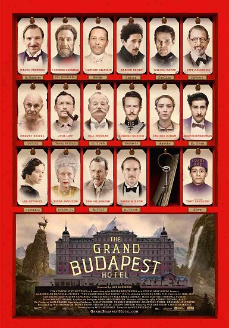

This is a very funny movie. Wes Anderson is really good at making these very different films that people are just captured by. This movie just proves that his talent is really unlimited. Ralph Fiennes is brilliant in this movie, but then again he always is. His performance in this movie really brought his career to a new point, because he really is a dramatic actor as seen in movies like "Schindler's List".
One of the best powerful and moving screenplays I have ever seen. The last scene never fails to amaze me no matter how many times I watch it. The story-telling, actions and acting everything on point. I watched this movie more than 50 times and Solomon Vandy (Djimon Hounsou) really impressed on his acting. All scenes very unforgettable but one scene is most beautiful. In the last scene, when Solomon climbed the mountain taking injured Danny Archer (Leonardo DiCaprio) on his shoulder. i was emotional that he knew better that Archer will take the diamond from his but he was doing his help continuously.
The Revenant is one of the greatest movies I've seen in my life everything in this film felt real and scenes in this film felt so intense especially the bear attack, Leonardo DiCaprio deserved that Oscar after being snubbed like 10 times throughout his career, I still think he should have won that Oscar in 2012 and 2013. This movie is about a guy who gets betrayed and left for dead by his own hunting team, but luckily he got up and went all the way to get his revenge on them, mostly to Tom Hardy's character.
I saved the best for the last. Well here it is, one of the most anticipated movies of 2008. How was it? It was excellent. By far the best Batman film ever made and of course it will be one of the most memorable action films for a long while. Everyone was waiting to see how well Heath Ledger performed as The Joker in this film. He definitely deserves an Oscar in his honor. The character was so dark and creepy that it sent chills up my back. Great explosions made it entertaining. Made you feel great that this is finally the best action to come in a long time.